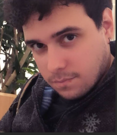
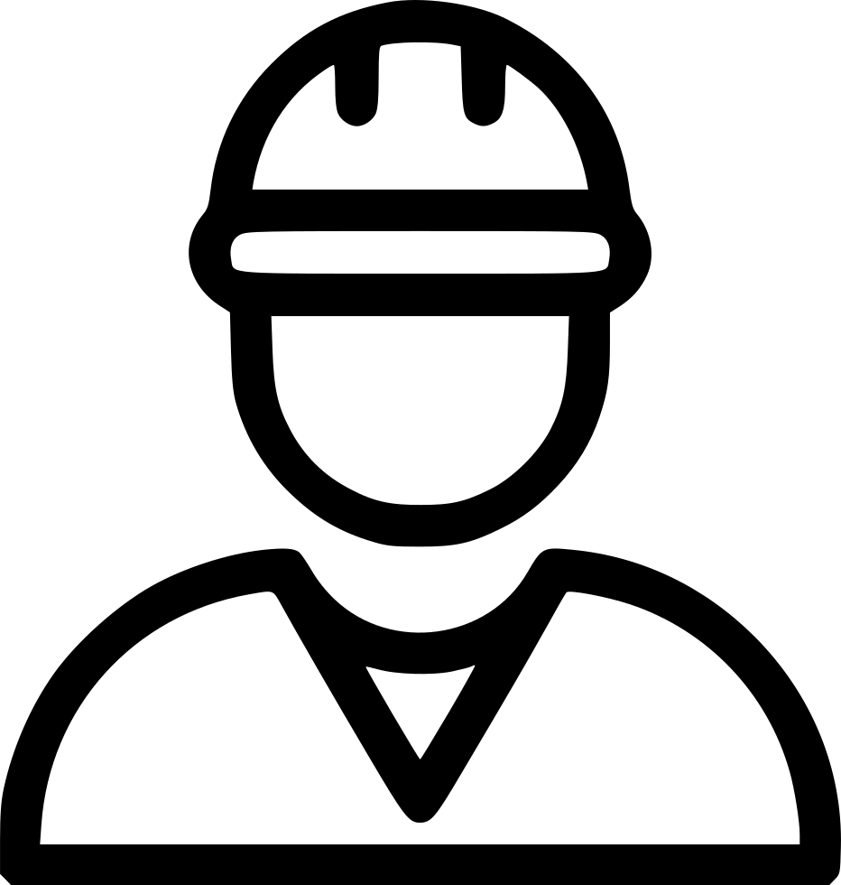
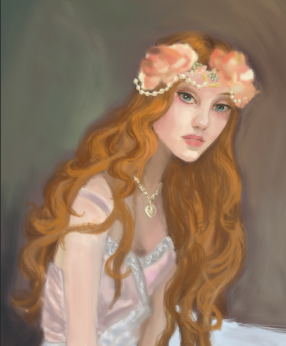
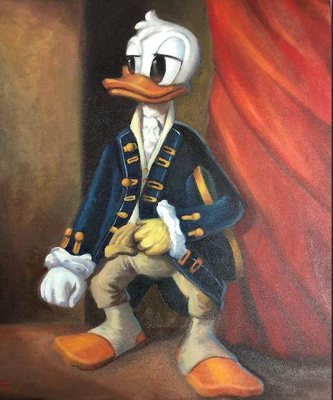
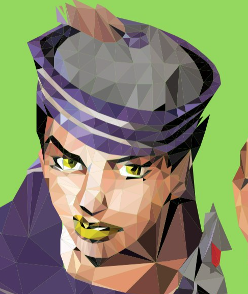
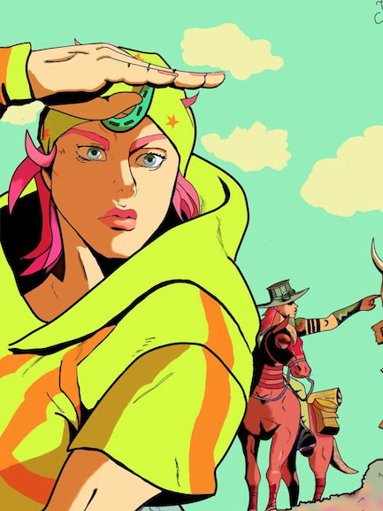

Fernando José B. De Brito Filho

informações pessoais
- Brasileiro, Solteiro
- Endereço: R. José De Holanda, 690, Torre
- Data nasc: 07/04/1995
- contato: (81) 9.9548-8459
- email: nando_jb@hotmail.com
- LinkedIn
Formação acadêmica

- Bacharelado em Publicidade e Propaganda pela Unicap, 2018.1
- Mestrando em Design pela Cesar School
- Cursando Análise e Desenvolvimento de Sistemas pela Faculdade Senac
Experiência Profíssional

Marketing Manager
Trabalhei como video-maker e criador de conteudo para a Banda Mofo, promovendo a marca do grupo, dirigindo/editando video-clipes e conteudos para gerar o marketing da banda
Video-maker
Responsavel pela edição do curta do evento: conecção Brasil-Alemanha.
Qualificações
Design
Photoshop
Illustrator
After Effects
Adobe Premiere
Maya
Linguagens e computação
Sistemas: Linux, Mac e Windows;
Algoritmos
Linguagem C
Html5 e Css
SQL
Idiomas
Português (Nativo)
Inglês (Fluente)
Francês (Básico)
Portfólio Artístico



